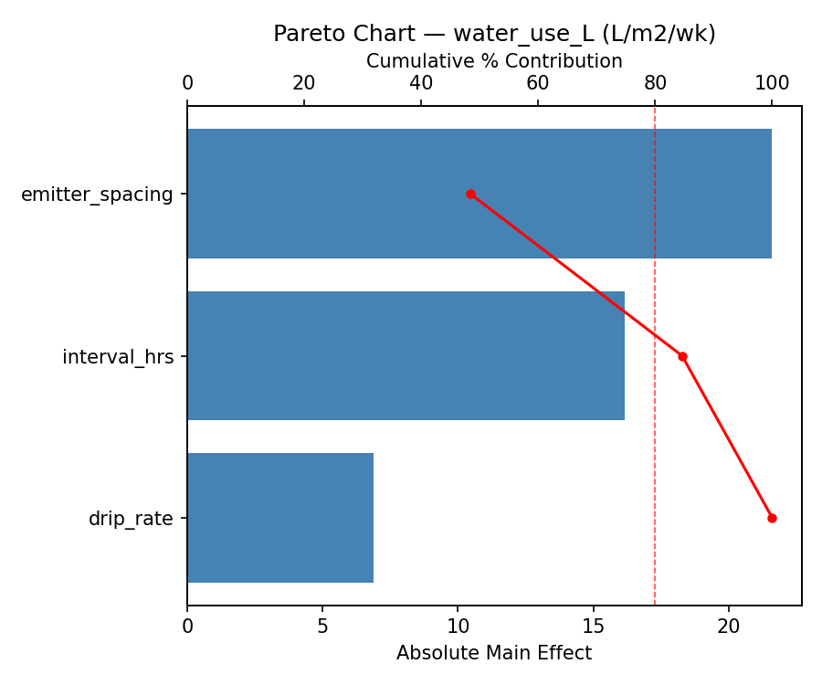
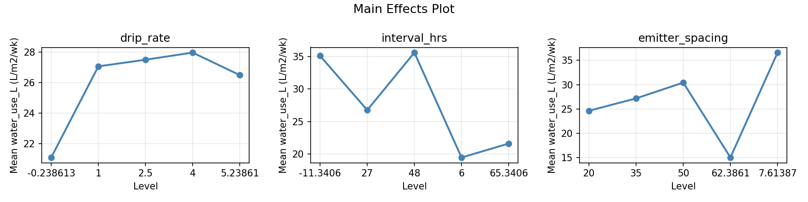
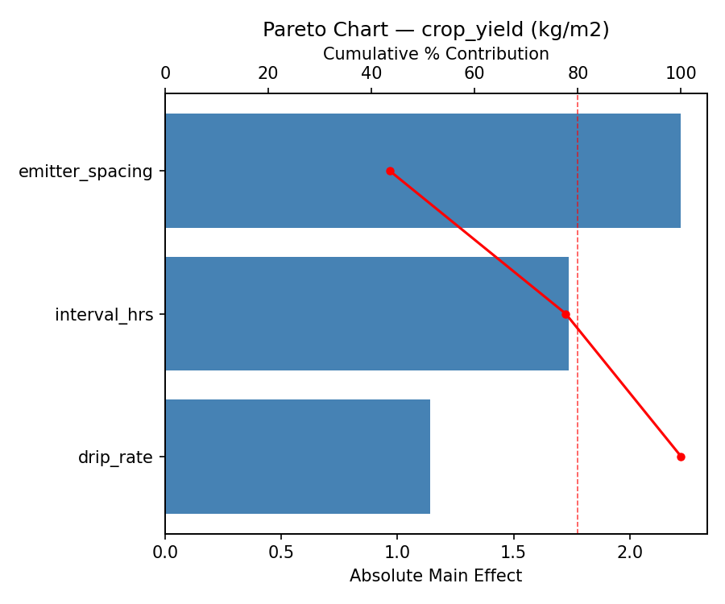
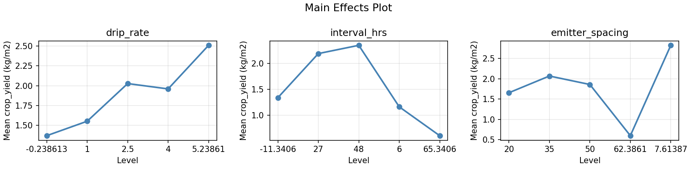
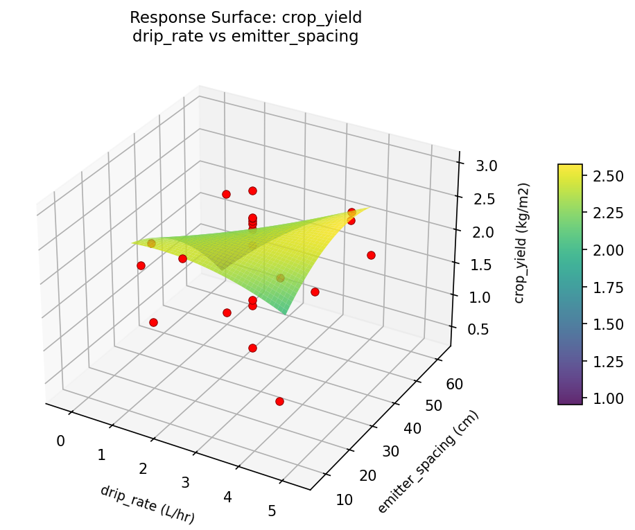
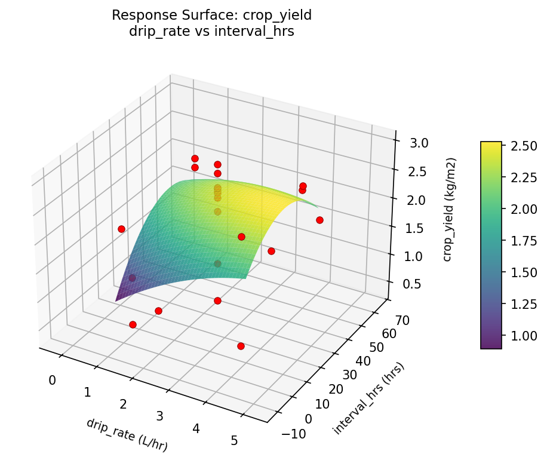
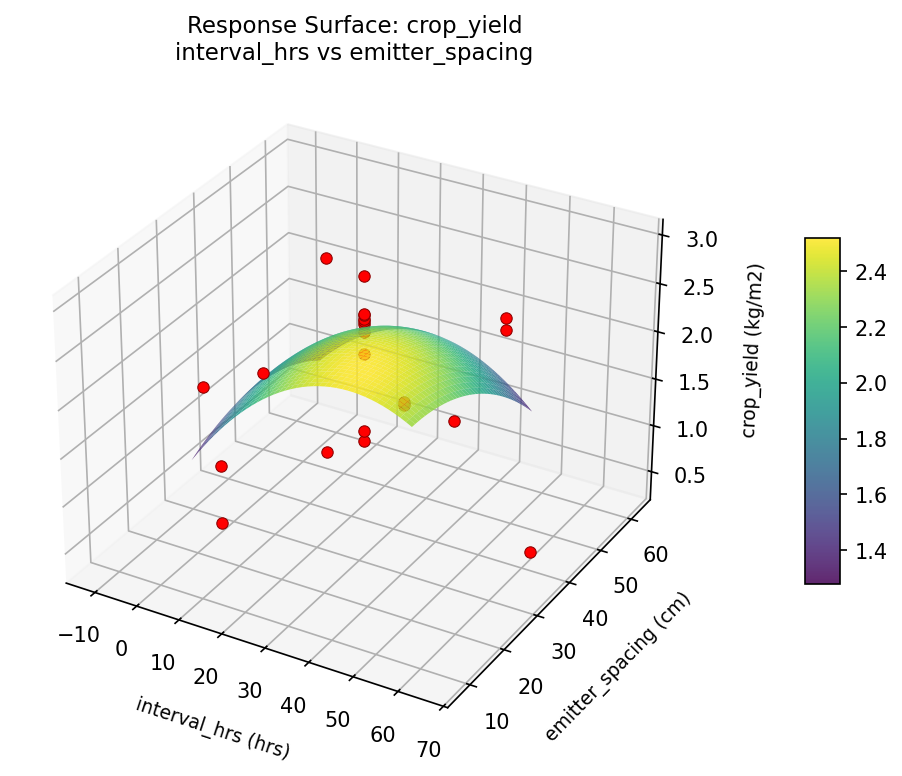
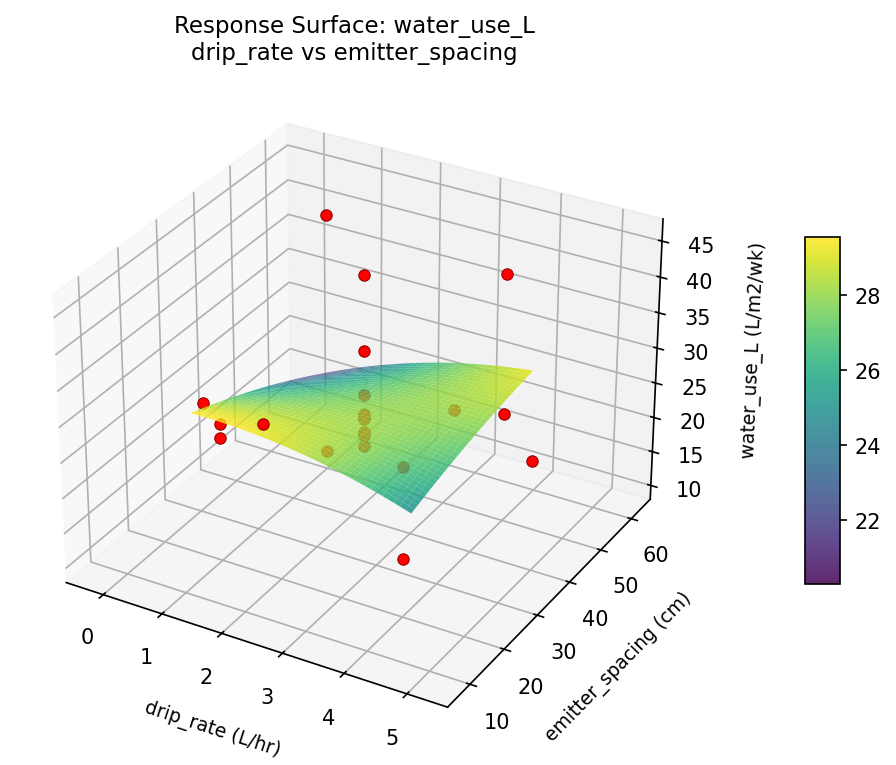
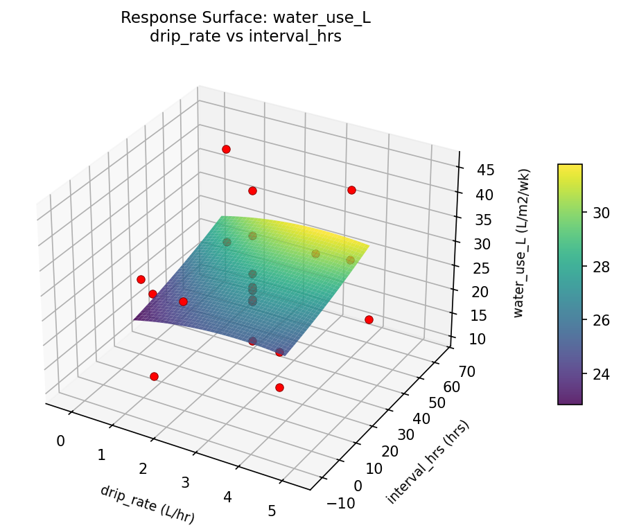
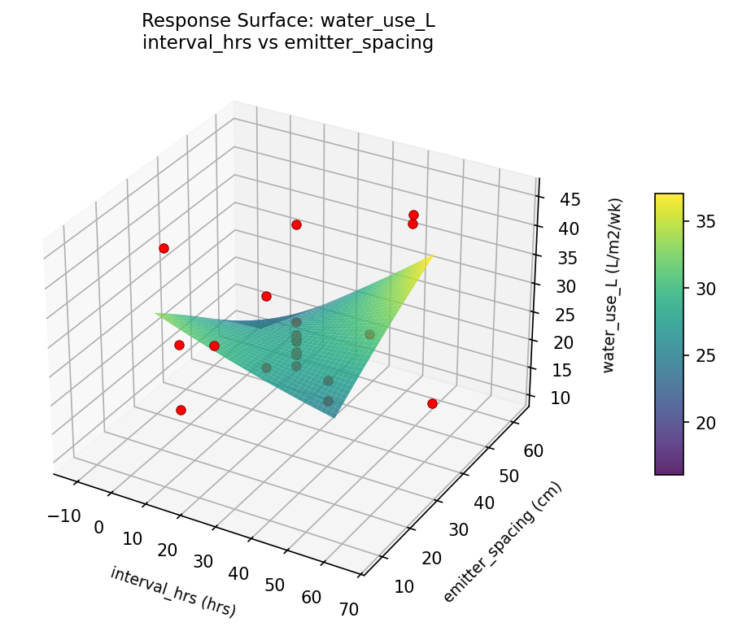

Experimental Setup
Factors
| Factor | Low | High | Unit |
|---|
drip_rate | 1 | 4 | L/hr |
interval_hrs | 6 | 48 | hrs |
emitter_spacing | 20 | 50 | cm |
Fixed: crop = strawberry, season = summer
Responses
| Response | Direction | Unit |
|---|
water_use_L | ↓ minimize | L/m2/wk |
crop_yield | ↑ maximize | kg/m2 |
Configuration
{
"metadata": {
"name": "Drip Irrigation Scheduling",
"description": "Central composite design to minimize water usage and maximize crop yield by tuning drip rate, interval, and emitter spacing"
},
"factors": [
{
"name": "drip_rate",
"levels": [
"1",
"4"
],
"type": "continuous",
"unit": "L/hr"
},
{
"name": "interval_hrs",
"levels": [
"6",
"48"
],
"type": "continuous",
"unit": "hrs"
},
{
"name": "emitter_spacing",
"levels": [
"20",
"50"
],
"type": "continuous",
"unit": "cm"
}
],
"fixed_factors": {
"crop": "strawberry",
"season": "summer"
},
"responses": [
{
"name": "water_use_L",
"optimize": "minimize",
"unit": "L/m2/wk"
},
{
"name": "crop_yield",
"optimize": "maximize",
"unit": "kg/m2"
}
],
"settings": {
"operation": "central_composite",
"test_script": "use_cases/104_irrigation_scheduling/sim.sh"
}
}
Experimental Matrix
The Central Composite Design produces 22 runs. Each row is one experiment with specific factor settings.
| Run | drip_rate | interval_hrs | emitter_spacing |
|---|
| 1 | 2.5 | 27 | 35 |
| 2 | 4 | 6 | 50 |
| 3 | 1 | 48 | 20 |
| 4 | 2.5 | 65.3406 | 35 |
| 5 | 2.5 | 27 | 35 |
| 6 | -0.238613 | 27 | 35 |
| 7 | 2.5 | 27 | 7.61387 |
| 8 | 2.5 | 27 | 35 |
| 9 | 4 | 48 | 20 |
| 10 | 5.23861 | 27 | 35 |
| 11 | 2.5 | 27 | 35 |
| 12 | 2.5 | -11.3406 | 35 |
| 13 | 2.5 | 27 | 35 |
| 14 | 1 | 6 | 50 |
| 15 | 2.5 | 27 | 35 |
| 16 | 4 | 6 | 20 |
| 17 | 2.5 | 27 | 62.3861 |
| 18 | 4 | 48 | 50 |
| 19 | 2.5 | 27 | 35 |
| 20 | 1 | 6 | 20 |
| 21 | 1 | 48 | 50 |
| 22 | 2.5 | 27 | 35 |
Step-by-Step Workflow
1
Preview the design
$ python doe.py info --config use_cases/104_irrigation_scheduling/config.json
2
Generate the runner script
$ python doe.py generate --config use_cases/104_irrigation_scheduling/config.json \
--output use_cases/104_irrigation_scheduling/results/run.sh --seed 42
3
Execute the experiments
$ bash use_cases/104_irrigation_scheduling/results/run.sh
4
Analyze results
$ python doe.py analyze --config use_cases/104_irrigation_scheduling/config.json
5
Get optimization recommendations
$ python doe.py optimize --config use_cases/104_irrigation_scheduling/config.json
6
Generate the HTML report
$ python doe.py report --config use_cases/104_irrigation_scheduling/config.json \
--output use_cases/104_irrigation_scheduling/results/report.html
Features Exercised
| Feature | Value |
|---|
| Design type | central_composite |
| Factor types | continuous (all 3) |
| Arg style | double-dash |
| Responses | 2 (water_use_L ↓, crop_yield ↑) |
| Total runs | 22 |
Analysis Results
Generated from actual experiment runs using the DOE Helper Tool.
Response: water_use_L
Top factors: emitter_spacing (48.4%), interval_hrs (36.2%), drip_rate (15.4%).
Pareto Chart

Main Effects Plot

Response: crop_yield
Top factors: emitter_spacing (43.6%), interval_hrs (34.1%), drip_rate (22.4%).
Pareto Chart

Main Effects Plot

Response Surface Plots
3D surfaces fitted with quadratic RSM. Red dots are observed data points.
crop yield drip rate vs emitter spacing

crop yield drip rate vs interval hrs

crop yield interval hrs vs emitter spacing

water use L drip rate vs emitter spacing

water use L drip rate vs interval hrs

water use L interval hrs vs emitter spacing

Full Analysis Output
RSM surface: rsm_water_use_L_drip_rate_vs_interval_hrs.png
RSM surface: rsm_water_use_L_drip_rate_vs_emitter_spacing.png
RSM surface: rsm_water_use_L_interval_hrs_vs_emitter_spacing.png
RSM surface: rsm_crop_yield_drip_rate_vs_interval_hrs.png
RSM surface: rsm_crop_yield_drip_rate_vs_emitter_spacing.png
RSM surface: rsm_crop_yield_interval_hrs_vs_emitter_spacing.png
=== Main Effects: water_use_L ===
Factor Effect Std Error % Contribution
--------------------------------------------------------------
emitter_spacing 21.6000 1.9368 48.4%
interval_hrs 16.1500 1.9368 36.2%
drip_rate 6.8750 1.9368 15.4%
=== Summary Statistics: water_use_L ===
drip_rate:
Level N Mean Std Min Max
------------------------------------------------------------
-0.238613 1 21.1000 0.0000 21.1000 21.1000
1 4 27.0750 13.9560 10.5000 44.6000
2.5 12 27.5083 8.0831 15.0000 45.5000
4 4 27.9750 11.3828 16.2000 43.1000
5.23861 1 26.5000 0.0000 26.5000 26.5000
interval_hrs:
Level N Mean Std Min Max
------------------------------------------------------------
-11.3406 1 35.1000 0.0000 35.1000 35.1000
27 12 26.7500 7.7539 15.0000 45.5000
48 4 35.6000 9.6523 25.6000 44.6000
6 4 19.4500 7.6046 10.5000 27.6000
65.3406 1 21.6000 0.0000 21.6000 21.6000
emitter_spacing:
Level N Mean Std Min Max
------------------------------------------------------------
20 4 24.6250 5.7968 16.2000 29.1000
35 12 27.1750 6.8778 21.1000 45.5000
50 4 30.4250 16.3966 10.5000 44.6000
62.3861 1 15.0000 0.0000 15.0000 15.0000
7.61387 1 36.6000 0.0000 36.6000 36.6000
=== Main Effects: crop_yield ===
Factor Effect Std Error % Contribution
--------------------------------------------------------------
emitter_spacing 2.2200 0.1759 43.6%
interval_hrs 1.7375 0.1759 34.1%
drip_rate 1.1400 0.1759 22.4%
=== Summary Statistics: crop_yield ===
drip_rate:
Level N Mean Std Min Max
------------------------------------------------------------
-0.238613 1 1.3700 0.0000 1.3700 1.3700
1 4 1.5525 0.9403 0.3800 2.3900
2.5 12 2.0275 0.8443 0.6000 2.9700
4 4 1.9600 0.9080 0.6000 2.4700
5.23861 1 2.5100 0.0000 2.5100 2.5100
interval_hrs:
Level N Mean Std Min Max
------------------------------------------------------------
-11.3406 1 1.3400 0.0000 1.3400 1.3400
27 12 2.1883 0.7207 0.6000 2.9700
48 4 2.3475 0.0834 2.2300 2.4200
6 4 1.1650 0.9382 0.3800 2.4700
65.3406 1 0.6100 0.0000 0.6100 0.6100
emitter_spacing:
Level N Mean Std Min Max
------------------------------------------------------------
20 4 1.6550 0.9012 0.6000 2.4200
35 12 2.0658 0.7276 0.6100 2.9700
50 4 1.8575 0.9899 0.3800 2.4700
62.3861 1 0.6000 0.0000 0.6000 0.6000
7.61387 1 2.8200 0.0000 2.8200 2.8200
Pareto chart (water_use_L): use_cases/104_irrigation_scheduling/results/analysis/pareto_water_use_L.png
Pareto chart (crop_yield): use_cases/104_irrigation_scheduling/results/analysis/pareto_crop_yield.png
Main effects (water_use_L): use_cases/104_irrigation_scheduling/results/analysis/main_effects_water_use_L.png
Main effects (crop_yield): use_cases/104_irrigation_scheduling/results/analysis/main_effects_crop_yield.png
Optimization Recommendations
=== Optimization: water_use_L ===
Direction: minimize
Best observed run: #21
drip_rate = 2.5
interval_hrs = 27
emitter_spacing = 35
Value: 10.5
RSM Model (linear, R² = 0.0518, Adj R² = -0.1063):
Coefficients:
intercept +27.1773
drip_rate -1.9860
interval_hrs +1.4199
emitter_spacing +0.3933
RSM Model (quadratic, R² = 0.3081, Adj R² = -0.2108):
Coefficients:
intercept +24.4141
drip_rate -1.9860
interval_hrs +1.4199
emitter_spacing +0.3933
drip_rate*interval_hrs +2.7000
drip_rate*emitter_spacing -2.8250
interval_hrs*emitter_spacing -1.2250
drip_rate^2 -0.6884
interval_hrs^2 +1.1566
emitter_spacing^2 +3.6766
Curvature analysis:
emitter_spacing coef=+3.6766 convex (has a minimum)
interval_hrs coef=+1.1566 convex (has a minimum)
drip_rate coef=-0.6884 concave (has a maximum)
Notable interactions:
drip_rate*emitter_spacing coef=-2.8250 (antagonistic)
drip_rate*interval_hrs coef=+2.7000 (synergistic)
interval_hrs*emitter_spacing coef=-1.2250 (antagonistic)
Predicted optimum (from linear model):
drip_rate = 1
interval_hrs = 48
emitter_spacing = 50
Predicted value: 30.9765
Model quality: Weak fit — consider adding center points or using a different design.
Factor importance:
1. emitter_spacing (effect: 19.3, contribution: 44.7%)
2. drip_rate (effect: 16.2, contribution: 37.6%)
3. interval_hrs (effect: 7.6, contribution: 17.7%)
=== Optimization: crop_yield ===
Direction: maximize
Best observed run: #16
drip_rate = 4
interval_hrs = 48
emitter_spacing = 20
Value: 2.97
RSM Model (linear, R² = 0.1404, Adj R² = -0.0028):
Coefficients:
intercept +1.9209
drip_rate -0.2341
interval_hrs -0.0353
emitter_spacing -0.2844
RSM Model (quadratic, R² = 0.3224, Adj R² = -0.1858):
Coefficients:
intercept +1.6622
drip_rate -0.2341
interval_hrs -0.0353
emitter_spacing -0.2844
drip_rate*interval_hrs -0.0425
drip_rate*emitter_spacing -0.0775
interval_hrs*emitter_spacing -0.3500
drip_rate^2 +0.0103
interval_hrs^2 +0.1153
emitter_spacing^2 +0.2623
Curvature analysis:
emitter_spacing coef=+0.2623 convex (has a minimum)
interval_hrs coef=+0.1153 convex (has a minimum)
drip_rate coef=+0.0103 negligible curvature
Notable interactions:
interval_hrs*emitter_spacing coef=-0.3500 (antagonistic)
Predicted optimum (from linear model):
drip_rate = 1
interval_hrs = 6
emitter_spacing = 20
Predicted value: 2.4748
Model quality: Weak fit — consider adding center points or using a different design.
Factor importance:
1. drip_rate (effect: 1.9, contribution: 44.8%)
2. interval_hrs (effect: 1.3, contribution: 30.6%)
3. emitter_spacing (effect: 1.0, contribution: 24.6%)